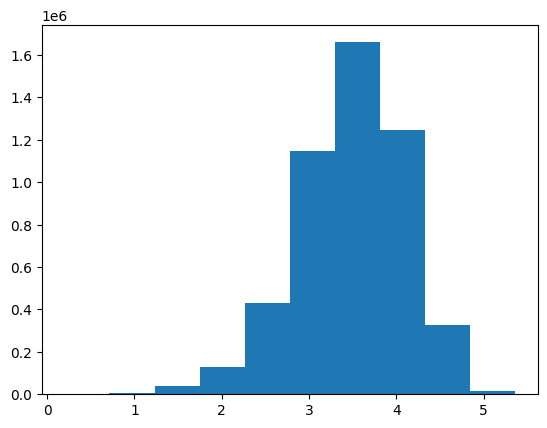
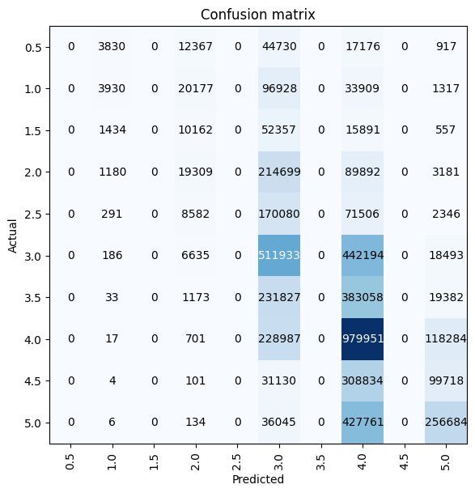
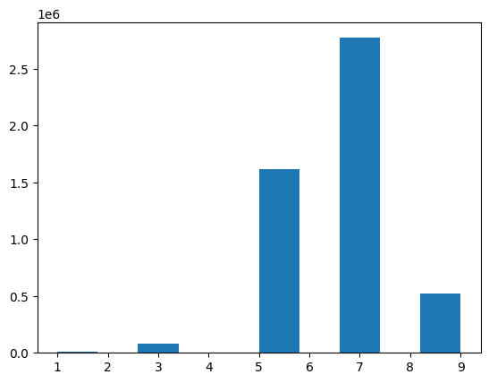
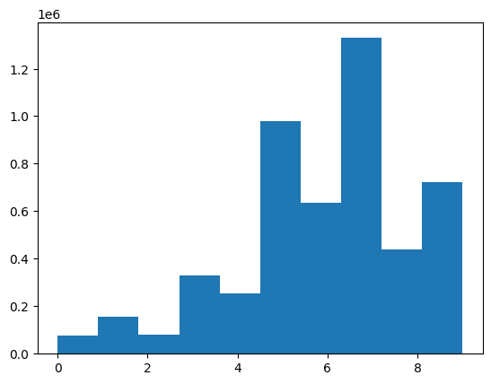
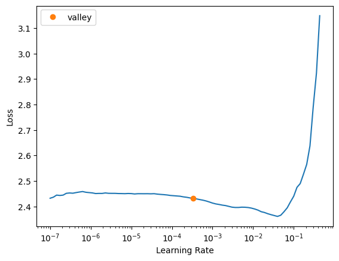
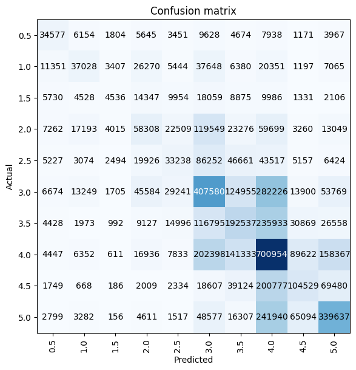
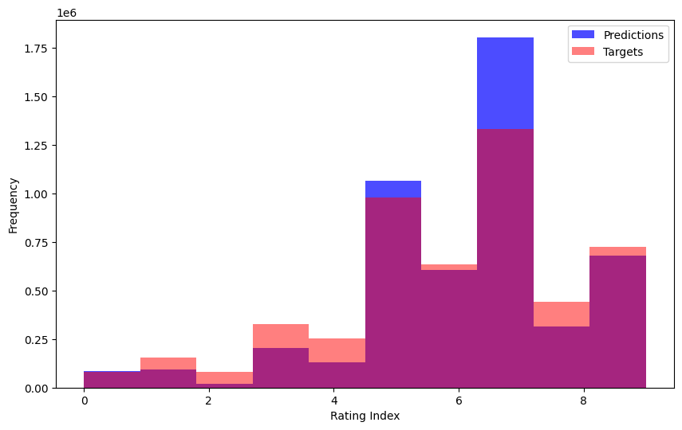

from fastai.collab import *
from fastai.tabular.all import *Training Models on the MovieLens 25M Dataset
deep learning
machine learning
fastai
python
In this notebook I train models using 5 different architectures on the 25 million rating MovieLens dataset and comapre performance and results.
Background
In this notebook I’ll work through the following prompt from the “Further Research” section of Chapter 8 (Collaborative Filtering) from the fastai textbook:
Complete this notebook using the full MovieLens dataset, and compare your results to online benchmarks. See if you can improve your accuracy. Look on the book’s website and the fast.ai forums for ideas. Note that there are more columns in the full dataset–see if you can use those too (the next chapter might give you ideas).
Here’s a summary of my results in this notebook:
| Arch | Metric | Metric Value |
|---|---|---|
DotProductBias |
MSE | 0.654875 |
DotProductBiasCE |
Accuracy | 35% |
| Random Forest (baseline) | Accuracy | 29% |
| Random Forest (additional columns) | Accuracy | 30% |
| Neural Net | Accuracy | 38% |
Load the Data
The data is formatted slightly differently than the 100k subset (main difference is the columns are labeled differently).
from google.colab import drive
drive.mount('/content/drive')Drive already mounted at /content/drive; to attempt to forcibly remount, call drive.mount("/content/drive", force_remount=True).path = Path('/content/drive/MyDrive/movielens25m')
path.ls()(#12) [Path('/content/drive/MyDrive/movielens25m/tags.csv'),Path('/content/drive/MyDrive/movielens25m/ratings.csv'),Path('/content/drive/MyDrive/movielens25m/movies.csv'),Path('/content/drive/MyDrive/movielens25m/genome-tags.csv'),Path('/content/drive/MyDrive/movielens25m/genome-scores.csv'),Path('/content/drive/MyDrive/movielens25m/links.csv'),Path('/content/drive/MyDrive/movielens25m/README.txt'),Path('/content/drive/MyDrive/movielens25m/rf_baseline_vars.pkl'),Path('/content/drive/MyDrive/movielens25m/rf_additional_vars.pkl'),Path('/content/drive/MyDrive/movielens25m/to_nn.pkl')...]ratings = pd.read_csv(path/'ratings.csv')
ratings.head()| userId | movieId | rating | timestamp | |
|---|---|---|---|---|
| 0 | 1 | 296 | 5.0 | 1147880044 |
| 1 | 1 | 306 | 3.5 | 1147868817 |
| 2 | 1 | 307 | 5.0 | 1147868828 |
| 3 | 1 | 665 | 5.0 | 1147878820 |
| 4 | 1 | 899 | 3.5 | 1147868510 |
ratings['movieId'].unique().shape, ratings['userId'].unique().shape((59047,), (162541,))movies = pd.read_csv(path/'movies.csv')
movies.head()| movieId | title | genres | |
|---|---|---|---|
| 0 | 1 | Toy Story (1995) | Adventure|Animation|Children|Comedy|Fantasy |
| 1 | 2 | Jumanji (1995) | Adventure|Children|Fantasy |
| 2 | 3 | Grumpier Old Men (1995) | Comedy|Romance |
| 3 | 4 | Waiting to Exhale (1995) | Comedy|Drama|Romance |
| 4 | 5 | Father of the Bride Part II (1995) | Comedy |
movies['movieId'].unique().shape(62423,)ratings = ratings.merge(movies[['movieId', 'title']])
ratings.head()| userId | movieId | rating | timestamp | title | |
|---|---|---|---|---|---|
| 0 | 1 | 296 | 5.0 | 1147880044 | Pulp Fiction (1994) |
| 1 | 3 | 296 | 5.0 | 1439474476 | Pulp Fiction (1994) |
| 2 | 4 | 296 | 4.0 | 1573938898 | Pulp Fiction (1994) |
| 3 | 5 | 296 | 4.0 | 830786155 | Pulp Fiction (1994) |
| 4 | 7 | 296 | 4.0 | 835444730 | Pulp Fiction (1994) |
dls = CollabDataLoaders.from_df(ratings, item_name='title', bs=1024)
dls.show_batch()| userId | title | rating | |
|---|---|---|---|
| 0 | 18382 | Goldfinger (1964) | 3.0 |
| 1 | 47473 | Eyes Wide Shut (1999) | 0.5 |
| 2 | 132661 | Garden State (2004) | 3.0 |
| 3 | 68944 | X-Men Origins: Wolverine (2009) | 0.5 |
| 4 | 126422 | Animal Kingdom (2010) | 3.5 |
| 5 | 122810 | Hotel Rwanda (2004) | 3.5 |
| 6 | 8458 | Sherlock Holmes (2009) | 4.0 |
| 7 | 21172 | Indiana Jones and the Temple of Doom (1984) | 4.0 |
| 8 | 94712 | Dark Knight, The (2008) | 3.5 |
| 9 | 88335 | Chicken Run (2000) | 2.0 |
dls.classes.keys()dict_keys(['userId', 'title'])n_users = len(dls.classes['userId'])
n_movies = len(dls.classes['title'])
n_users, n_movies(162542, 58959)Training Using Different Approaches
DotProductBias with Embeddings
The first architecture I’ll use is the DotProductBias with Embeddings:
class DotProductBias(Module):
def __init__(self, n_users, n_movies, n_factors, y_range=(0,5.5)):
self.user_factors = Embedding(n_users, n_factors)
self.user_bias = Embedding(n_users, 1)
self.movie_factors = Embedding(n_movies, n_factors)
self.movie_bias = Embedding(n_movies, 1)
self.y_range = y_range
def forward(self, x):
users = self.user_factors(x[:,0])
movies = self.movie_factors(x[:,1])
res = (users * movies).sum(dim=1, keepdim=True)
res += self.user_bias(x[:,0]) + self.movie_bias(x[:,1])
return sigmoid_range(res, *self.y_range)I’ll use the same number of epochs, learning rate and weight decay as the textbook training example:
model = DotProductBias(n_users, n_movies, 50)
learn = Learner(dls, model, loss_func=MSELossFlat())
learn.fit_one_cycle(5, 5e-3, wd=0.1)| epoch | train_loss | valid_loss | time |
|---|---|---|---|
| 0 | 0.718568 | 0.750686 | 1:31:29 |
| 1 | 0.721771 | 0.743393 | 1:50:58 |
| 2 | 0.675583 | 0.713021 | 1:51:44 |
| 3 | 0.627697 | 0.671975 | 1:48:30 |
| 4 | 0.608647 | 0.654875 | 1:41:17 |
When using the 100k subset the lowest validation MSE I got was about 0.836. A validation MSE of 0.654875 is about a 22% reduction.
After rounding the predictions to the nearest 0.5, the model has a validation accuracy of about 30%. Yikes! That’s terrible.
preds, targs = learn.get_preds(dl=dls.valid)predstensor([[3.1825],
[3.1959],
[3.6061],
...,
[1.6408],
[3.3054],
[3.4723]])rounded_preds = (preds / 0.5).round() * 0.5
rounded_predstensor([[3.0000],
[3.0000],
[3.5000],
...,
[1.5000],
[3.5000],
[3.5000]])targstensor([[3.0000],
[5.0000],
[3.5000],
...,
[1.0000],
[2.0000],
[3.5000]])(rounded_preds == targs).float().mean()tensor(0.2931)If I round to the nearest integer, the validation accuracy increases to about 36%. Still not great.
(preds.round(decimals=0) == targs).float().mean()tensor(0.3581)Plotting predictions versus the targets shows the weak relationship between the two:
def plot_preds_v_targs(preds, targs):
plt.figure(figsize=(10, 6))
plt.scatter(targs.detach().numpy().squeeze(), preds.detach().numpy().squeeze(), alpha=0.5)
plt.xlabel('Targets')
plt.ylabel('Predictions')
plt.title('Predictions vs Targets')
plt.show()plot_preds_v_targs(preds, targs)
Here’s the distribution of the ratings targets for the ~5M validation records:
plt.hist(targs.detach().numpy().squeeze());
There are considerably fewer predictions less than 3 and greater than 4:
plt.hist(preds.detach().numpy().squeeze());
Let’s hope for better luck with other architectures!
DotProductBiasCE (for Cross Entropy Loss)
I’ll use the same architecture that I created for another Further Research prompt, with the slight modification that instead of projecting the dot product to 5 ratings I’ll project them to 10 ratings (as there are ten 0.5-increment ratings in the dataset: 0.5, 1.0, 1.5, 2.0, 2.5, 3.0, 3.5, 4.0, 4.5, 5.0).
class DotProductBiasCE(Module):
def __init__(self, n_users, n_movies, n_factors):
self.user_factors = Embedding(n_users, n_factors)
self.user_bias = Embedding(n_users, 1)
self.movie_factors = Embedding(n_movies, n_factors)
self.movie_bias = Embedding(n_movies, 1)
self.linear = nn.Linear(1, 10)
def forward(self, x_cat, x_cont):
x = x_cat
users = self.user_factors(x[:,0])
movies = self.movie_factors(x[:,1])
res = (users * movies).sum(dim=1, keepdim=True)
res += self.user_bias(x[:,0]) + self.movie_bias(x[:,1])
return self.linear(res)I’ll use the same training setup as I did with the 100k subset, but with a larger batch size (otherwise it takes much longer to train). Note that using the same learning rate for a batch size of 1024 as a batch size of 64 will likely not result in optimal training.
dls = TabularDataLoaders.from_df(
ratings[['userId', 'title', 'rating']],
procs=[Categorify],
cat_names=['userId','title'],
y_names=['rating'],
y_block=CategoryBlock,
bs=1024)b = dls.one_batch()
len(b), b[0].shape, b[1].shape, b[2].shape(3, torch.Size([1024, 2]), torch.Size([1024, 0]), torch.Size([1024, 1]))dls.vocab[0.5, 1.0, 1.5, 2.0, 2.5, 3.0, 3.5, 4.0, 4.5, 5.0]dls.show_batch()| userId | title | rating | |
|---|---|---|---|
| 0 | 64415 | Jumpin' Jack Flash (1986) | 2.0 |
| 1 | 10508 | Lord of the Rings: The Return of the King, The (2003) | 4.5 |
| 2 | 126649 | Frances Ha (2012) | 4.0 |
| 3 | 119566 | Elizabeth (1998) | 3.0 |
| 4 | 77160 | Snake Eyes (1998) | 5.0 |
| 5 | 99259 | Untouchables, The (1987) | 3.5 |
| 6 | 3726 | Myth of Fingerprints, The (1997) | 2.0 |
| 7 | 100959 | Meet the Parents (2000) | 3.5 |
| 8 | 134993 | Nightmare on Elm Street, A (1984) | 1.0 |
| 9 | 117798 | Doubt (2008) | 4.0 |
n_users = len(dls.classes['userId'])
n_movies = len(dls.classes['title'])
n_users, n_movies(162542, 58959)Training with Cross Entropy Loss on the 25M dataset resulted in a model with about 35% validation accuracy, about 6% less than the 41% achieved on the 100k subset. The model is not showing signs of overfitting so I could have trained it for more epochs and potentially gained more accuracy.
model = DotProductBiasCE(n_users, n_movies, n_factors=50)
learn = Learner(dls, model, loss_func=CrossEntropyLossFlat(), metrics=accuracy)
learn.fit_one_cycle(5, 0.1, wd=0.1)| epoch | train_loss | valid_loss | accuracy | time |
|---|---|---|---|---|
| 0 | 1.919933 | 1.924016 | 0.288326 | 1:04:57 |
| 1 | 1.914961 | 1.927970 | 0.284413 | 1:33:05 |
| 2 | 1.900328 | 1.901067 | 0.294077 | 1:19:56 |
| 3 | 1.837524 | 1.847121 | 0.313432 | 1:40:26 |
| 4 | 1.704779 | 1.740781 | 0.354360 | 1:18:08 |
3’s and 4’s were the most correctly predicted ratings by this model, with the model performing quite badly for other ratings—in particular, the model did not predict any 0.5, 1.5, 2.5, 3.5, or 4.5 ratings.
interp = ClassificationInterpretation.from_learner(learn)
interp.plot_confusion_matrix(figsize=(6, 6))
preds, targs = learn.get_preds(dl=learn.dls.valid)By far the most common predicted rating was 4.0 (the 7th category in the vocab). Again, I’ll note the gaps between the bars where the 0.5-increment ratings are absent from the model’s predictions.
plt.hist(preds.argmax(dim=1));
While the most common target is also 4.0, note that it’s frequency is about half that in the prediction distribution.
plt.hist(targs.squeeze());
Random Forest (baseline)
As an additional exercise I’ll train a random forest on the userId, movieId and rating fields. In the following section, I’ll add some of the additional fields available and see if that improves the forest’s performance. I’ll follow the approach given in Chapter 9 of the fastai textbook.
Setup
I’ll start by creating a TabularPandas object with a random split:
splits = RandomSplitter(seed=42)(range_of(ratings))len(splits), len(splits[0]), len(splits[1])(2, 20000076, 5000019)to = TabularPandas(
ratings[['userId', 'title', 'rating']],
procs=[Categorify, FillMissing],
cat_names=['userId', 'title'],
cont_names=None,
y_names='rating',
y_block=CategoryBlock,
splits=splits)len(to.train), len(to.valid)(20000076, 5000019)to.show(3)| userId | title | rating | |
|---|---|---|---|
| 8613915 | 11056 | Divergent (2014) | 2.0 |
| 20221395 | 128803 | Town, The (2010) | 4.0 |
| 21140474 | 56442 | Jack Ryan: Shadow Recruit (2014) | 3.0 |
to.items.head(3) # coded values| userId | title | rating | |
|---|---|---|---|
| 8613915 | 11056 | 13670 | 3 |
| 20221395 | 128803 | 53868 | 7 |
| 21140474 | 56442 | 24434 | 5 |
to.vocab # 10 possible ratings[0.5, 1.0, 1.5, 2.0, 2.5, 3.0, 3.5, 4.0, 4.5, 5.0]# defining variables
xs,y = to.train.xs, to.train.y
valid_xs,valid_y = to.valid.xs, to.valid.y
xs.shape, y.shape, valid_xs.shape, valid_y.shape((20000076, 2), (20000076,), (5000019, 2), (5000019,))#save_pickle(path/'rf_baseline_vars.pkl', (xs, y, valid_xs, valid_y))I’ll create helper functions to calculate accuracy of the model:
def acc(pred,y): return (pred == y).mean()
def m_acc(m, xs, y): return acc(m.predict(xs), y)from sklearn.ensemble import RandomForestClassifier
def rf(xs, y, n_estimators=4, max_samples=10_000, max_features=0.5,
min_samples_leaf=5, **kwargs):
return RandomForestClassifier(n_jobs=-1, n_estimators=n_estimators, max_samples=max_samples,
max_features=max_features, min_samples_leaf=min_samples_leaf, oob_score=True).fit(xs, y)Training Results
Since training on the full data will likely take awhile, I’ll first fit a random forest with 4 trees and a max of ten thousand samples for each tree, which takes about a minute to train and results in a 22% validation accuracy which is not bad!
m = rf(xs, y, n_estimators=4, max_samples=10_000)m_acc(m, xs, y), m_acc(m, valid_xs, valid_y)(0.22450199689241182, 0.22447194700660136)Doubling the number of trees (to 8) increases the validation accuracy to 24% (+2%).
m = rf(xs, y, n_estimators=8, max_samples=10_000)
m_acc(m, xs, y), m_acc(m, valid_xs, valid_y)(0.24051508604267305, 0.24045988625243225)Tripling the number of trees (to 12) gives a smaller boost (1%) to the validation accuracy (25%).
m = rf(xs, y, n_estimators=12, max_samples=10_000)
m_acc(m, xs, y), m_acc(m, valid_xs, valid_y)(0.25057739780588834, 0.25026804898141386)As the number of samples increases by 10_000 (while keeping n_estimators=4) the validation accuracy increases by about 0.2-0.5% each time.
for samples in [20_000, 30_000, 40_000]:
m = rf(xs, y, n_estimators=4, max_samples=samples)
print(f'samples: {samples}; train acc: {m_acc(m, xs, y)}; valid acc: {m_acc(m, valid_xs, valid_y)}')samples: 20000; train acc: 0.23020222523154413; valid acc: 0.22950612787671407
samples: 30000; train acc: 0.23159146995241417; valid acc: 0.2313785207616211
samples: 40000; train acc: 0.23347261280407133; valid acc: 0.23300171459348454Next, I’ll train a random forest using the parameters given in Chapter 9 of the text (40 trees, 200_000 samples), keeping in mind that was for a 400k row dataset, so not optimized for 25M rows of data. I’ll then double n_estimators and max_samples to see which combination works best. I’m not using a for-loop like above since my Colab instance kept crashing so I’ll fit the different random forests in individual cells.
40 trees and 200_000 samples results in a validation accuracy of 28% (+3% from the previous best achieved by 12 trees and 10_000 samples).
trees = 40
samples = 200_000
m = rf(xs, y, n_estimators=trees, max_samples=samples)
print(f'samples: {samples}; trees: {trees}; train acc: {m_acc(m, xs, y):.2f}; valid acc: {m_acc(m, valid_xs, valid_y):.2f}')samples: 200000; trees: 40; train acc: 0.29; valid acc: 0.28Doubling the number of trees from 40 to 80 results in a 29% validation accuracy (+1%). It took about 35 minutes to train and predict.
trees = 80
samples = 200_000
m = rf(xs, y, n_estimators=trees, max_samples=samples)
print(f'samples: {samples}; trees: {trees}; train acc: {m_acc(m, xs, y):.2f}; valid acc: {m_acc(m, valid_xs, valid_y):.2f}')samples: 200000; trees: 80; train acc: 0.29; valid acc: 0.29Doubling the number of samples used to 400_000 while keeping the number of trees at 40 achieves the same validation accuracy (29%) and took about 21 minutes for training and inference.
trees = 40
samples = 400_000
m = rf(xs, y, n_estimators=trees, max_samples=samples)
print(f'samples: {samples}; trees: {trees}; train acc: {m_acc(m, xs, y):.2f}; valid acc: {m_acc(m, valid_xs, valid_y):.2f}')samples: 400000; trees: 40; train acc: 0.30; valid acc: 0.29Doubling the number of trees to 80 with 400_000 samples achieves the same accuracy of 29% (while taking 42 minutes for training and inference).
trees = 80
samples = 400_000
m = rf(xs, y, n_estimators=trees, max_samples=samples)
print(f'samples: {samples}; trees: {trees}; train acc: {m_acc(m, xs, y):.2f}; valid acc: {m_acc(m, valid_xs, valid_y):.2f}')samples: 400000; trees: 80; train acc: 0.30; valid acc: 0.29I’ll increase the number of samples significantly to 2_000_000. I’ll keep the number of trees at 40 for now since increasing that number doesn’t seem to improve validation accuracy significantly.
This results in a validation accuracy of 29%.
It doesn’t seem like increasing the number of trees or samples will significantly change the validation accuracy.
trees = 40
samples = 2_000_000
m = rf(xs, y, n_estimators=trees, max_samples=samples)
print(f'samples: {samples}; trees: {trees}; train acc: {m_acc(m, xs, y):.2f}; valid acc: {m_acc(m, valid_xs, valid_y):.2f}')samples: 2000000; trees: 40; train acc: 0.33; valid acc: 0.29def rf_feat_importance(m, df):
return pd.DataFrame({'cols': df.columns, 'imp': m.feature_importances_}
).sort_values('imp', ascending=False)With this data and model, userId is almost twice as important as the movie title.
rf_feat_importance(m, xs)| cols | imp | |
|---|---|---|
| 0 | userId | 0.640407 |
| 1 | title | 0.359593 |
Random Forest (with additional data)
There a few additional columns available that may improve the performance of the random forest:
ratings.csvhas atimestampcolumn.- This is easy to incorporate as there is one value per rating.
movies.csvhas agenrescolumn.- There are multiple pipe-separated genres per movie, I’ll pick one genre per movie.
tags.csvhas tags associated with each movie by users.- There are multiple tags for each movie/user pair, I’ll pick one tag per user/movie pair.
genome-scores.csvhasgenome-tagsassociated with each movie.- There are multiple genome-tags per movie, so I’ll pick the genome-tag with the highest score for each movie.
# do str.split on `movies` before merging with `ratings` since it has fewer rows
movies['genres'] = movies['genres'].str.split('|', n=1).str[0]ratings = ratings.merge(movies)ratings.head() # peep the new `genres` column with a single genre| userId | movieId | rating | timestamp | title | genres | |
|---|---|---|---|---|---|---|
| 0 | 1 | 296 | 5.0 | 1147880044 | Pulp Fiction (1994) | Comedy |
| 1 | 3 | 296 | 5.0 | 1439474476 | Pulp Fiction (1994) | Comedy |
| 2 | 4 | 296 | 4.0 | 1573938898 | Pulp Fiction (1994) | Comedy |
| 3 | 5 | 296 | 4.0 | 830786155 | Pulp Fiction (1994) | Comedy |
| 4 | 7 | 296 | 4.0 | 835444730 | Pulp Fiction (1994) | Comedy |
ratings.shape(25000095, 6)Only a fraction (~10%) of all of the ratings.csv userIds are captured in tags.csv, whereas about 75% of the movieIds are captured in tags.csv. I’ll pick the most frequent tag for each movie and merge with the ratings data.
tags = pd.read_csv(path/'tags.csv')ratings['userId'].unique().shape, tags['userId'].unique().shape((162541,), (14592,))ratings['movieId'].unique().shape, tags['movieId'].unique().shape((59047,), (45251,))There’s about 8k tags that are different only because of capitalization—I’ll set all tags to lower case:
tags['tag'].unique().shape, tags['tag'].str.lower().unique().shape((73051,), (65465,))tags['tag'] = tags['tag'].str.lower()# thanks Claude 3.5 Sonnet
# this was MUCH faster than using groupby + agg
most_common_tags = (
tags.groupby(['movieId', 'tag'])
.size()
.reset_index(name='count')
.sort_values(['movieId', 'count'], ascending=[True, False])
.drop_duplicates('movieId')
.drop('count', axis=1)
)
most_common_tags.head()| movieId | tag | |
|---|---|---|
| 78 | 1 | pixar |
| 155 | 2 | robin williams |
| 168 | 3 | fishing |
| 185 | 4 | chick flick |
| 207 | 5 | steve martin |
ratings.shape(25000095, 6)ratings = ratings.merge(most_common_tags, on=['movieId'], how='left')
print(ratings.shape)
ratings.head()(25000095, 7)| userId | movieId | rating | timestamp | title | genres | tag | |
|---|---|---|---|---|---|---|---|
| 0 | 1 | 296 | 5.0 | 1147880044 | Pulp Fiction (1994) | Comedy | quentin tarantino |
| 1 | 3 | 296 | 5.0 | 1439474476 | Pulp Fiction (1994) | Comedy | quentin tarantino |
| 2 | 4 | 296 | 4.0 | 1573938898 | Pulp Fiction (1994) | Comedy | quentin tarantino |
| 3 | 5 | 296 | 4.0 | 830786155 | Pulp Fiction (1994) | Comedy | quentin tarantino |
| 4 | 7 | 296 | 4.0 | 835444730 | Pulp Fiction (1994) | Comedy | quentin tarantino |
Only a very small fraction of ratings are without a tag:
ratings['tag'].isna().sum()83417genome_scores = pd.read_csv(path/'genome-scores.csv')genome_tags = pd.read_csv(path/'genome-tags.csv')genome_scores.head()| movieId | tagId | relevance | |
|---|---|---|---|
| 0 | 1 | 1 | 0.02875 |
| 1 | 1 | 2 | 0.02375 |
| 2 | 1 | 3 | 0.06250 |
| 3 | 1 | 4 | 0.07575 |
| 4 | 1 | 5 | 0.14075 |
genome_tags.head()| tagId | tag | |
|---|---|---|
| 0 | 1 | 007 |
| 1 | 2 | 007 (series) |
| 2 | 3 | 18th century |
| 3 | 4 | 1920s |
| 4 | 5 | 1930s |
I’ll use the most relevant genome tag for each movie:
most_common_genomes = (
genome_scores.sort_values(['movieId', 'relevance'], ascending=[True, False])
.drop_duplicates('movieId')
)
most_common_genomes.head()| movieId | tagId | relevance | |
|---|---|---|---|
| 1035 | 1 | 1036 | 0.99925 |
| 1156 | 2 | 29 | 0.97600 |
| 3156 | 3 | 901 | 0.97525 |
| 4499 | 4 | 1116 | 0.97525 |
| 5412 | 5 | 901 | 0.96025 |
genome_scores['movieId'].unique().shape, most_common_genomes.shape((13816,), (13816, 3))With that sorted, I’ll get the actual tag text:
most_common_genomes = most_common_genomes.merge(genome_tags)
most_common_genomes.shape(13816, 4)most_common_genomes = most_common_genomes.rename(columns={'tag': 'genome_tag'})
most_common_genomes.head()| movieId | tagId | relevance | genome_tag | |
|---|---|---|---|---|
| 0 | 1 | 1036 | 0.99925 | toys |
| 1 | 1920 | 1036 | 0.99575 | toys |
| 2 | 3114 | 1036 | 0.99850 | toys |
| 3 | 78499 | 1036 | 0.99875 | toys |
| 4 | 81981 | 1036 | 0.84225 | toys |
most_common_genomes['movieId'].unique().shape(13816,)and add it to the main DataFrame:
ratings.shape(25000095, 7)ratings = ratings.merge(most_common_genomes[['movieId', 'genome_tag']], how='left')
ratings.head()| userId | movieId | rating | timestamp | title | genres | tag | genome_tag | |
|---|---|---|---|---|---|---|---|---|
| 0 | 1 | 296 | 5.0 | 1147880044 | Pulp Fiction (1994) | Comedy | quentin tarantino | hit men |
| 1 | 3 | 296 | 5.0 | 1439474476 | Pulp Fiction (1994) | Comedy | quentin tarantino | hit men |
| 2 | 4 | 296 | 4.0 | 1573938898 | Pulp Fiction (1994) | Comedy | quentin tarantino | hit men |
| 3 | 5 | 296 | 4.0 | 830786155 | Pulp Fiction (1994) | Comedy | quentin tarantino | hit men |
| 4 | 7 | 296 | 4.0 | 835444730 | Pulp Fiction (1994) | Comedy | quentin tarantino | hit men |
With the DataFrame established, I’ll create a TabularPandas object using the same seed (42) as before for splits.
splits = RandomSplitter(seed=42)(range_of(ratings))
len(splits), len(splits[0]), len(splits[1])(2, 20000076, 5000019)to = TabularPandas(
ratings[['userId', 'title', 'timestamp', 'genres', 'tag', 'genome_tag', 'rating']],
procs=[Categorify, FillMissing],
cat_names=['userId', 'title', 'genres', 'tag', 'genome_tag'],
cont_names=['timestamp'],
y_names='rating',
y_block=CategoryBlock,
splits=splits)len(to.train), len(to.valid)(20000076, 5000019)to.show(3)| userId | title | genres | tag | genome_tag | timestamp | rating | |
|---|---|---|---|---|---|---|---|
| 8613915 | 11056 | Divergent (2014) | Adventure | dystopia | vampire human love | 1422282990 | 2.0 |
| 20221395 | 128803 | Town, The (2010) | Crime | ben affleck | crime | 1312046717 | 4.0 |
| 21140474 | 56442 | Jack Ryan: Shadow Recruit (2014) | Action | cia | tom clancy | 1491438306 | 3.0 |
to.items.head(3) # coded values| userId | title | timestamp | genres | tag | genome_tag | rating | |
|---|---|---|---|---|---|---|---|
| 8613915 | 11056 | 13670 | 1422282990 | 3 | 4536 | 791 | 3 |
| 20221395 | 128803 | 53868 | 1312046717 | 7 | 1983 | 183 | 7 |
| 21140474 | 56442 | 24434 | 1491438306 | 2 | 3241 | 769 | 5 |
xs,y = to.train.xs, to.train.y
valid_xs,valid_y = to.valid.xs, to.valid.y
xs.shape, y.shape, valid_xs.shape, valid_y.shape((20000076, 6), (20000076,), (5000019, 6), (5000019,))Using the additional columns has increased the validation accuracy from 22% (when using only movieId and userId) to 23.7% (when using the additional columns timestamp, tag, genome_tag and genres).
m = rf(xs, y, n_estimators=4, max_samples=10_000)
m_acc(m, xs, y), m_acc(m, valid_xs, valid_y)(0.23697224950545187, 0.23664510074861717)Doubling the number of trees to 8 yields a validation accuracy of 25% (a ~1% increase from before).
m = rf(xs, y, n_estimators=8, max_samples=10_000)
m_acc(m, xs, y), m_acc(m, valid_xs, valid_y)(0.2500907496551513, 0.24987865046112825)Tripling the number of trees to 12 yields a validation accuracy of 26% (a ~1% increase from before).
m = rf(xs, y, n_estimators=12, max_samples=10_000)
m_acc(m, xs, y), m_acc(m, valid_xs, valid_y)(0.25923971488908343, 0.2590440156327406)For every 10_000 sample increase (with 4 trees) the validation accuracy improves between 0.02-0.6%.
for samples in [20_000, 30_000, 40_000]:
m = rf(xs, y, n_estimators=4, max_samples=samples)
print(f'samples: {samples}; train acc: {m_acc(m, xs, y)}; valid acc: {m_acc(m, valid_xs, valid_y)}')samples: 20000; train acc: 0.24337092519048428; valid acc: 0.24275807751930542
samples: 30000; train acc: 0.2467036625260824; valid acc: 0.24597866528107193
samples: 40000; train acc: 0.24714531084781877; valid acc: 0.24619486445951505Increasing the number of trees to 40 and the number of samples to 200_000 results in a validation accuracy of 30% (the baseline random forest validation accuracy was 28%).
trees = 40
samples = 200_000
m = rf(xs, y, n_estimators=trees, max_samples=samples)
print(f'samples: {samples}; trees: {trees}; train acc: {m_acc(m, xs, y):.2f}; valid acc: {m_acc(m, valid_xs, valid_y):.2f}')samples: 200000; trees: 40; train acc: 0.30; valid acc: 0.30Doubling the number of trees results in a validation accuracy of 30%. (baseline was 29%).
trees = 80
samples = 200_000
m = rf(xs, y, n_estimators=trees, max_samples=samples)
print(f'samples: {samples}; trees: {trees}; train acc: {m_acc(m, xs, y):.2f}; valid acc: {m_acc(m, valid_xs, valid_y):.2f}')samples: 200000; trees: 80; train acc: 0.31; valid acc: 0.30Doubling the number of samples to 400_000 with 40 trees gets a validation accuracy of 30% (baseline was 29%).
trees = 40
samples = 400_000
m = rf(xs, y, n_estimators=trees, max_samples=samples)
print(f'samples: {samples}; trees: {trees}; train acc: {m_acc(m, xs, y):.2f}; valid acc: {m_acc(m, valid_xs, valid_y):.2f}')samples: 400000; trees: 40; train acc: 0.31; valid acc: 0.30Doubling the number of trees to 80 with 400_000 samples does not improve the validation accuracy of 30%.
trees = 80
samples = 400_000
m = rf(xs, y, n_estimators=trees, max_samples=samples)
print(f'samples: {samples}; trees: {trees}; train acc: {m_acc(m, xs, y):.2f}; valid acc: {m_acc(m, valid_xs, valid_y):.2f}')samples: 400000; trees: 80; train acc: 0.32; valid acc: 0.30Even after increasing the number of samples to 2M, the validation accuracy stays at 30%.
trees = 40
samples = 2_000_000
m = rf(xs, y, n_estimators=trees, max_samples=samples)
print(f'samples: {samples}; trees: {trees}; train acc: {m_acc(m, xs, y):.2f}; valid acc: {m_acc(m, valid_xs, valid_y):.2f}')samples: 2000000; trees: 40; train acc: 0.36; valid acc: 0.30It’s interesting (and a bit concerning) to note that timestamp is the most important feature for this model—it’s 6-7 times as important as the movie title.
rf_feat_importance(m, xs)| cols | imp | |
|---|---|---|
| 5 | timestamp | 0.443988 |
| 0 | userId | 0.346306 |
| 1 | title | 0.073165 |
| 3 | tag | 0.060231 |
| 4 | genome_tag | 0.056996 |
| 2 | genres | 0.019314 |
I’ll follow fastai’s Chapter 9 approach to determining which columns’ values differ the most between the training and validation set.
df_dom = pd.concat([xs, valid_xs])
is_valid = np.array([0]*len(xs) + [1]*len(valid_xs))m = rf(df_dom, is_valid, n_estimators=40, max_samples=400_000)timestamp is the most important feature when distinguishing between the training and validation set. I’ll remove it to see if it improves training.
rf_feat_importance(m, df_dom)| cols | imp | |
|---|---|---|
| 5 | timestamp | 0.313090 |
| 0 | userId | 0.311026 |
| 1 | title | 0.131196 |
| 3 | tag | 0.106029 |
| 4 | genome_tag | 0.099509 |
| 2 | genres | 0.039150 |
m = rf(xs.drop('timestamp', axis=1), y, n_estimators=40, max_samples=400_000)After removing timestamp, userId surges to the top, being 6 times as important as the 2nd-most important feature (title). The validation accuracy stays at 30%.
rf_feat_importance(m, xs.drop('timestamp', axis=1))| cols | imp | |
|---|---|---|
| 0 | userId | 0.674746 |
| 1 | title | 0.113734 |
| 3 | tag | 0.096440 |
| 4 | genome_tag | 0.088569 |
| 2 | genres | 0.026510 |
m_acc(m, valid_xs.drop('timestamp', axis=1), valid_y)0.2971844706990113Neural Net (tabular_learner)
Next, I’ll train a neural net on this data and see how it performs. I’ll also use the embeddings from the neural net later on to train a new random forest.
df_nn = ratings.drop(['timestamp', 'movieId'], axis=1)df_nn.head()| userId | rating | title | genres | tag | genome_tag | |
|---|---|---|---|---|---|---|
| 0 | 1 | 5.0 | Pulp Fiction (1994) | Comedy | quentin tarantino | hit men |
| 1 | 3 | 5.0 | Pulp Fiction (1994) | Comedy | quentin tarantino | hit men |
| 2 | 4 | 4.0 | Pulp Fiction (1994) | Comedy | quentin tarantino | hit men |
| 3 | 5 | 4.0 | Pulp Fiction (1994) | Comedy | quentin tarantino | hit men |
| 4 | 7 | 4.0 | Pulp Fiction (1994) | Comedy | quentin tarantino | hit men |
procs_nn = [Categorify, FillMissing]
cat_nn = ['userId', 'genres', 'tag', 'genome_tag']
cont_nn = None
splits = RandomSplitter(seed=42)(range_of(df_nn))
len(splits), len(splits[0]), len(splits[1])(2, 20000076, 5000019)to_nn = TabularPandas(
df_nn,
procs_nn,
cat_names=cat_nn,
cont_names=None,
splits=splits,
y_names='rating',
y_block=CategoryBlock)dls = to_nn.dataloaders(1024)dls.show_batch()| userId | genres | tag | genome_tag | rating | |
|---|---|---|---|---|---|
| 0 | 149149 | Documentary | boxing | documentary | 4.0 |
| 1 | 5588 | Action | conspiracy | conspiracy | 5.0 |
| 2 | 67949 | Adventure | animation | computer animation | 3.0 |
| 3 | 61069 | Action | satire | satire | 0.5 |
| 4 | 43620 | Comedy | 1930s | 1930s | 3.0 |
| 5 | 161519 | Action | natalie portman | hit men | 4.0 |
| 6 | 155206 | Crime | tom hanks | oscar (best directing) | 4.0 |
| 7 | 91508 | Drama | england | skinhead | 4.0 |
| 8 | 76347 | Drama | clint eastwood | western | 5.0 |
| 9 | 30987 | Crime | serial killer | oscar (best directing) | 5.0 |
learn = tabular_learner(dls, layers=[1000, 500], loss_func=CrossEntropyLossFlat(), metrics=accuracy)learn.lr_find()SuggestedLRs(valley=0.0003311311302240938)
The GPU RAM stayed at around 3.5/15.0 GB during training so if I wanted to train again I’d use a larger batch size. The neural net achieved a 38% validation accuracy, better than the random forest (30%) and the DotProductBiasCE model (35%).
learn.fit_one_cycle(5, 2e-2)| epoch | train_loss | valid_loss | accuracy | time |
|---|---|---|---|---|
| 0 | 1.576747 | 1.615499 | 0.359292 | 19:06 |
| 1 | 1.557086 | 1.605259 | 0.362625 | 18:48 |
| 2 | 1.514029 | 1.582966 | 0.369193 | 19:03 |
| 3 | 1.422227 | 1.559873 | 0.377868 | 18:50 |
| 4 | 1.328115 | 1.570342 | 0.382583 | 18:48 |
The neural net is much better at predicting a diverse range of ratings (whereas DotProductBiasCE did not predict any ratings ending with .5). Like the DotProductBiasCE model, the neural net’s most accurate prediction was 4. Unlike DotProductBiasCE the diagonal in the confusion matrix is somewhat darker than the non-diagonal, showing that the model is doing a better job of correctly predicting ratings (as exhibited by the higher overall accuracy).
interp = ClassificationInterpretation.from_learner(learn)
interp.plot_confusion_matrix(figsize=(6, 6))
preds, targs = learn.get_preds(dl=learn.dls.valid)The distribution of predictions has no gaps—the model predicts all possible ratings.
plt.figure(figsize=(10, 6))
plt.hist(preds.argmax(dim=1).squeeze(), alpha=0.7, color='blue', label='Predictions');
plt.hist(targs.squeeze(), alpha=0.5, color='red', label='Targets');
plt.legend()
plt.xlabel('Rating Index')
plt.ylabel('Frequency')
plt.show()
Random Forest with Neural Net Embeddings
The final approach I was hoping to implement was using the embeddings from the neural net to create additional columns and using them to train a random forest, as done in this Medium post.
However, I ran into some RAM and disk space issues. To illustrate, I’ll show the four Embeddings that the model has learned, which totals an output of 955 values.
learn.model.embedsModuleList(
(0): Embedding(162542, 600)
(1): Embedding(21, 9)
(2): Embedding(9856, 276)
(3): Embedding(841, 70)
)The smallest data type (without receiving an error) I was able to use when passing a column of xs through an Embedding was int32 which takes up 4 bytes per element. With 20M rows in the training set, outputting 955 values each 4 bytes large would take up about 76 GB of storage.
20e6*4*955/1e976.4Another 5M rows of the validation set (each with 955 Embedding outputs) would bump that up to over 100GB. Kaggle provides 73GB of disk space and 30GB of RAM. Google Colab provides 107GB of disk space and 13GB of RAM.
Handling these sorts of RAM/disk space issues is something I want to learn about and experiment with in the future, after which I can return to this scale of a dataset in an attempt to train it.
Final Thoughts
Training models on the full MovieLens 25M rating dataset using Kaggle and/or Google Colab was tough. Training a single model took up to 9 hours (in the case of DotProductBias), so just getting through five different architectures required patience (on top of a lot of runtime crashes due to RAM maxing out). However, it was still fun to see how these different architectures behaved and performed during training. Here’s a summary of my results:
| Arch | Metric | Metric Value |
|---|---|---|
DotProductBias |
MSE | 0.654875 |
DotProductBiasCE |
Accuracy | 35% |
| Random Forest (baseline) | Accuracy | 29% |
| Random Forest (additional columns) | Accuracy | 30% |
| Neural Net | Accuracy | 38% |
In the fastai textbook, the MSE of DotProductBias on the 100k rating subset was about 0.8 and in my experiments with DotProductBiasCE (Cross-Entropy Loss) the Accuracy for DotProductBiasCE was about 40%. The 25M DotProductBias beat the 100k subset’s MSE and the 25M neural net was competitive with the 100k subset’s accuracy.
There’s still performance gains that I didn’t pursue (for example, training the neural net for more epochs or trying a different number of hidden layer sizes), but I’m satisfied with the breadth of my experiments and learning experience.
I hope you enjoyed this blog post! Following me on Twitter @vishal_learner.